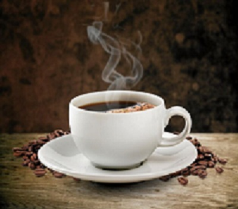

kaffebolaget
Den goda smaken har vi jobbat med ända sedan 1906
Då min farfarsfar Anders och hans bröder John och Josef grundade Företaget. I början såldes vårt goda kaffe över disk i vårt närområde. Idag kan du njuta av det både hemma och på kaféer och restauranger i hela Sverige – och i många andra länder. Det tror jag att min farfarsfar hade varit riktigt stolt över.Vi är fortfarande ett familjeföretag, det kommer vi alltid att vara. Och jag är säker på att vi alltid kommer att vara en viktig del av den svenska kaffekulturen. Vi jobbar stenhårt med att bevaka vad som händer just nu och vad som är på gång i framtiden, och vi gör det med glädje. Gott kaffe är det bästa vi vet.
Passionen för gott kaffe har alltså funnits med oss i mer än hundra år. Att ta ansvar för människor och miljö har varit en självklarhet lika länge. Idag jobbar vi med ansvar på många olika sätt, i odlarländerna och här hemma. Vi är till exempel en av världens största inköpare av ekologiskt och Fairtrade-märkt kaffe och arbetar aktivt för att ännu fler ska välja gott kaffe från certifierade odlingar. Det gör vi för att du alltid ska känna dig trygg i att vårt kaffe både smakar och gör gott.